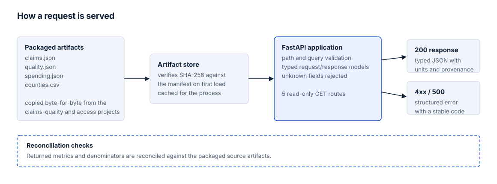

Analytics delivery · Python · FastAPI · Typed contracts
Healthcare Analytics API
A read-only FastAPI service that makes the results of the claims and access analyses available to other applications.
Problem
The claims and access projects produce their results as CSV and JSON files. Another application could read those files directly, but it would then depend on each project's file layout and have to handle validation, errors and versioning itself.
The API puts one consistent interface in front of both: stable field names, units and denominators on every metric, validated inputs, predictable errors, and a record of which version of the analysis each response came from.
How it works

FastAPI routes call an artifact service that reads the result files packaged with the application. The files are copied from the source projects, so the API serves a fixed snapshot and does not recompute anything.
| GET endpoint | Purpose |
|---|---|
/health | Service status and data check |
/quality/summary | Defect-evaluation results |
/spending/summary | Baseline spending and join-error comparison |
/access/counties | Massachusetts county indicators; optional selection filter |
/access/counties/{county_fips} | One available county |
Requests and errors
Responses are typed models. Each metric carries its name, value, unit, basis, denominator and source period, and provenance fields record the source project, its version and the artifact version. Money stays in integer USD cents, and null means unavailable, not zero.
A county FIPS code must be five digits, and unknown query parameters or filter values return an error. Every error uses the same JSON envelope with a stable machine-readable code.
Error responses by status code
- 400: malformed FIPS or repeated query parameters.
- 422: unsupported query parameter or filter value.
- 404: well-formed but unavailable county, or unknown route.
- 405: unsupported method on a valid route.
- 500: internal failure with a fixed, safe message.
OpenAPI covers both success and error schemas, and Swagger documentation is generated locally.
Testing
The tests check values as well as status codes: every metric and denominator the service returns is compared with the packaged source files. They also cover response shapes, invalid input, missing or altered data files, and repeat runs.
Examples
These are recorded responses from a local run of the API; this page does not call a live server.
View the complete recorded JSON response
Limitations
The API serves fixed outputs from the two analysis projects and is a local demonstration, not a production service. The claims data are synthetic and the access indicators are historical public aggregates. Analytical limitations are those of the source projects.